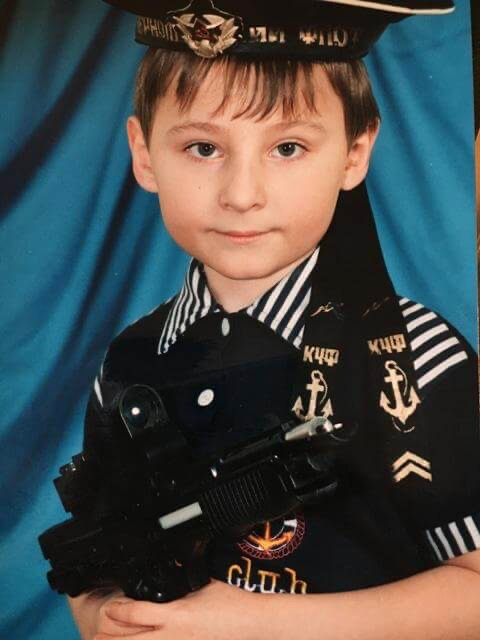

Once upon a time, I was a little kid. I would rather forget those times, but decided it would be fun to show some childhood photos to have a good laugh.

My dad used to be a fashion star.
For the first 20 years of my life, my parents really wanted me to have a hairstyle like my dad - but it just never worked out.

The most humiliating thing in childhood was having to wear tights, and people mistaking me for a girl.

Little Nick hated semolina porridge and dentists the most. And nothing has changed since then.
If you look closely, my hair here looks like Adolf Hitler's.
When I was 8, my mom got into baking. She was really good at it!

I tried to learn to play guitar in school. I play terribly, but at least I look good in the photos.

In the 7th grade, everyone was crazy about Eminem. I wasn't into the music, but I thought rappers looked really cool (never been more wrong!).
I still think I looked irresistible in the 8th grade.
During puberty, I was quite the rebel - I started and quit smoking, climbed onto roofs and sneaked around buildings, and even got into trouble with the police. But I don't have any other "criminal" photos left!

I worked as a camp counselor for several years. It was fun working with kids, but nerve-wracking at times - I still sometimes get Vietnam-style flashbacks from those days.

Nowadays, I look something like this. Thanks for your attention, you are amazing!